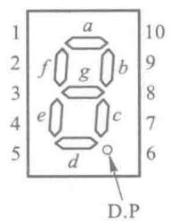
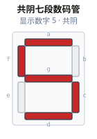
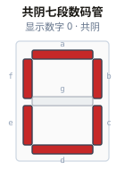
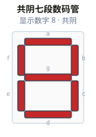
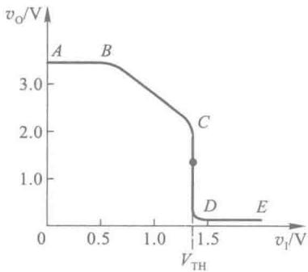
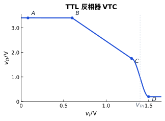
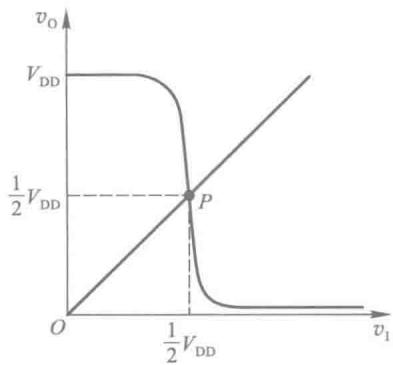
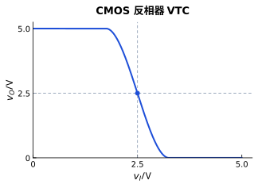

SG01 · 七段管外形 vs 数字5点亮
左：段名/引脚外形图；右：共阴点亮示意（不同子类，对照用途）


成功 5/5 · 2026-09-02 13:37 · 七段：白底教材风 · 曲线：Matplotlib
左：段名/引脚外形图；右：共阴点亮示意（不同子类，对照用途）


段 a~f 亮，g 灭

段 a~g 全亮

Matplotlib 参数示意 · 非实测


Matplotlib 对称陡降模型

